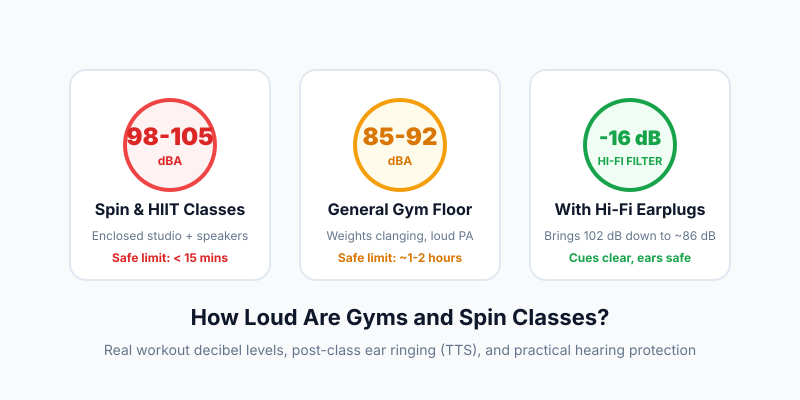

How Loud Are Gyms and Spin Classes? Safe Decibel Limits & Protection
Published Aug 28, 2026 • 7 min read
If you've ever stepped out of an energetic spin class or boutique HIIT workout feeling like your ears are stuffed with cotton—or hearing a subtle high-pitched ringing in the locker room—you aren't imagining it. Group fitness studios are routinely measured as some of the loudest recreational environments in daily life.
While high-tempo playlists and enthusiastic coaching are great for workout motivation, the sound pressure levels in enclosed fitness studios frequently reach levels comparable to rock concerts and industrial manufacturing plants.
The gym noise numbers at a glance
- Spin / Cycling Studios: Average 98 to 104 dBA, with sprint peaks exceeding 110 dBA.
- Safe NIOSH Exposure Limit at 100 dBA: Only 15 minutes before risking permanent noise-induced hearing damage. A typical class lasts 45 to 60 minutes.
- Temporary Threshold Shift (TTS): That "muffled" sensation after class is temporary auditory fatigue. If repeated 3–4 times a week, it steadily converts into permanent high-frequency hearing loss.
Real Decibel Measurements Across Gym Zones
Sound levels vary widely depending on where you are in the gym. Here is what typical sound level meter readings show across different workout zones:
| Gym Area / Activity | Typical Sound Level | Daily Safe Limit (NIOSH) |
|---|---|---|
| Front Desk / Lobby | 60 – 68 dBA | > 24 Hours (Safe) |
| Cardio Floor (Treadmills running) | 74 – 80 dBA | > 8 Hours |
| Free Weights (Plates dropping, background music) | 82 – 88 dBA | 2 to 4 Hours |
| Group HIIT / BodyPump Studio | 92 – 98 dBA | 20 to 50 Minutes |
| Spin Studio (Front Row near Subwoofers) | 100 – 108 dBA | 3.75 to 15 Minutes |
Learn more about exposure limits in our guide to The 3 dB Rule & Halving Safe Time.
Why Do Instructors Keep Turning the Volume Up?
Most fitness instructors aren't intentionally trying to damage your ears. Two natural acoustic and physiological phenomena drive volume escalation:
- Acoustic Masking over Vocal Mics: To make sure their voice cuts through heavy bass, instructors turn up their headset microphone. As the voice gets louder, they boost the background music to match the energy, creating an upward volume spiral.
- Instructor Auditory Fatigue (TTS): After teaching 2 or 3 back-to-back classes, an instructor's ear hair cells experience temporary desensitization. What was 95 dB at 7:00 AM sounds like 85 dB to them by 10:00 AM, prompting them to turn up the master mixer dial.
Post-Workout Ear Fullness: The Warning Sign
When you exit a loud class and speech sounds muffled, your auditory system has triggered a Temporary Threshold Shift (TTS). The tiny stereocilia hair cells in your inner ear have been over-stimulated and swollen from acoustic strain.
While hearing sensitivity usually recovers within 16 to 48 hours of quiet rest, repeated bouts of TTS accelerate cochlear synaptopathy ("hidden hearing loss"), eventually causing irreversible high-frequency hearing loss and chronic tinnitus.
You can test your own hearing baseline before and after a workout with our quick Online Pure Tone Hearing Test.
How to Protect Your Hearing in Loud Classes (Without Looking Weird)
You don't need to quit your favorite classes. Here are three simple, practical adjustments:
1. Switch to High-Fidelity (Acoustic) Earplugs
Best SolutionUnlike cheap foam earplugs that muffle all sound into muddy mush, Hi-Fi earplugs (such as Loop Experience, Earasers, or Alpine) use acoustic filters with a flat attenuation curve. They drop volume evenly across all frequencies by 15 to 18 dB. The music still sounds punchy and crisp, and you can understand the instructor's spoken cues even better than with bare ears.
2. Pick the Right Bike or Mat Position
Due to the inverse-square law of sound propagation, sound pressure drops roughly 6 dB every time you double your distance from a speaker. Avoid bikes or workout stations directly under ceiling-mounted horn speakers or right in front of subwoofers. Booking a bike in the middle-back row can lower your exposure by 4 to 8 dBA.
3. Measure and Give Constructive Feedback
Open our Live Decibel Meter on your phone during class. If your screen regularly flashes >100 dBA, share a polite note with gym management: "Love the energy in class, but the sound meter peaked at 106 dB today. Lowering it just 3 dB would cut acoustic stress in half while keeping the workout just as fun."